生成时间：2026-11-10（r7 角色准入修复轮） · 代码基线
main = ea877fa+ 本轮改动 · 环境make platform-up（req 8082 / deliver 8083 / gateway 8080 / web 5173 / MySQLdevops_platform）
本文的权限码与准入格取自PermissionMatrix.java与本轮路由meta.functionCode，可用make access-verify在本机复核（见 §6.3）。先说结论：功能面是齐的，r7 修掉的两条 P0（字典 403、菜单与路由不同源）已交付并有自动化证据，见 §6。
make platform-up # 拉起 MySQL + req + deliver + web，末尾打印 READY
open http://127.0.0.1:5173 # 登录页，租户 t1
make platform-down # 演示结束| 账号 | 姓名 | 角色 | 密码 | 权限码 | 可见需求数 |
|---|---|---|---|---|---|
admin | 平台管理员 | PLATFORM_ADMIN | Admin@12345 | 56 | 12 |
pm | 产品经理-张 | PRODUCT | Passw0rd! | 26 | 12 |
tl1 | 项目域负责人-李 | PMO（域负责人） | Passw0rd! | 40 | 12 |
po1 | 二级企业负责人-王 | SUB_BUSINESS_LEADER | Passw0rd! | 11 | 8（仅本企业提报） |
dev1 | 研发-赵 | DEV | Passw0rd! | 24 | 12 |
dev2 | 研发-钱 | DEV | Passw0rd! | 24 | 12 |
qa1 | 测试-孙 | QA | Passw0rd! | 33 | 12 |
qa2 | 测试-周 | QA | Passw0rd! | 33 | 12 |
vendor1 | 厂商管理员-钱 | PMO + 厂商 VEN-A | Passw0rd! | 40 | 3（仅本厂商承接） |
vendor2 | 厂商研发-郑 | DEV + 厂商 VEN-B | Passw0rd! | 24 | 0（未承接） |
biz1 a | 陈业务 | BUSINESS（业务部门） | Passw0rd! | 8 a | 8 a |
suite1 a | 许二级 | SUB_BUSINESS_LEADER（二级企业业务） | Passw0rd! | 11 a | 8 a |
隔离是真实生效的：同一租户下全量角色看到 12 条（make platform-demo-reset 后的干净数据集），po1（二级企业负责人）只看到本企业 8 条，vendor1 只看到本厂商承接的 3 条，vendor2 0 条。
已补齐：
BUSINESS（业务部门）与二级企业业务账号不再缺位。biz1用于演示“业务方自己提报”，suite1与po1同角色（SUB_BUSINESS_LEADER）用于演示“二级企业业务读面”，两者与po1同租户 t1、同组织 supplyOrg，并在种子循环里绑同一组 7 个业务域，故数据范围天然同源。
| 域 | 能力 | 入口页 |
|---|---|---|
| 需求 | 三类需求（BUS/PDR/RD）、三层父子拆解、需求池（入池/待评审/关闭统计）、编号规则、CSV 导出 | /requirements /requirements/:id /requirements/new |
| 审批 | 自研审批引擎：提报/评审入池/版本/发布四类单据、会签/或签、条件分支、加签/减签、转办/撤回/催办、流程定义（版本化） | /approvals /admin/workflows |
| 版本与发布 | 版本计划（Release）+ 里程碑、发布单、准入校验 9 项（需求全测过/无未关闭 P0·P1/MR/人天/审批/构建/Sonar/制品/门禁）、PMO 强制放行留痕 | /releases /deploy-orders |
| 研发交付 | 任务、迭代看板、MR 区（GitLab 同步）、追溯矩阵（需求→任务→MR→测试→缺陷→发布） | /iterations /traceability |
| 缺陷 | P0–P3、状态机、重开计数、看板、失败转缺陷、生产缺陷回流 | /defects /defects/board |
| 测试 | 用例库（版本化）、用例评审单、测试计划（策略/轮次/执行/分配）、测试报告三签、质量门、豁免、环境台账、执行器健康 | /testcases /test-plans /test-reports /quality-gates /test-envs /test-executors |
| 协作（M8） | 甘特（版本/迭代/需求三视图、拖拽改期落库+审计）、Wiki（空间隔离/版本回滚/全文检索/回收站）、价值流（7 阶段、WIP、P90 停留、流动效率、瓶颈） | /gantt /wiki /value-stream |
| 代码与集成（M7/M8） | 分支策略登记与 GitLab 现状核验（MATCH/DRIFT/UNVERIFIED）、CR 行级评论、Sonar 质量摘要、四系统集成配置 | /code-policies /admin/integrations |
| 平台治理 | 组织/租户/用户/角色/权限矩阵（10 角色 × 56 功能码）、指标字典、审计日志、API 客户端 | /admin/* |
规模：REST 接口 196 个映射、前端 54 个页面、业务表 53 张、验证套件（r1 14 / platform 168 / quality 348 / integration 230 / collab 263 / access 约 85 / negative 25 / unit 234 / lint 16）。
| 页面 | admin | pm | tl1 | po1 | dev1 | qa1 | vendor1 | biz1 | suite1 |
|---|---|---|---|---|---|---|---|---|---|
需求池 /requirements | ✅ | ✅ | ✅ | ✅ | ✅ | ✅ | ✅ | ✅ | ✅ |
版本计划 /releases | ✅ | ✅ | ✅ | ✅ | ✅ | ✅ | ✅ | ⛔4 | ✅ |
审批中心 /approvals | ✅ | ✅ | ✅ | ✅ | ✅ | ✅ | ✅ | ✅ | ✅ |
测试计划 /test-plans | ✅ | ✅ | ✅ | ⛔4 | ⛔4 | ✅ | ✅ | ⛔4 | ⛔4 |
用例库 /testcases | ✅ | ✅ | ✅ | ⛔1 | ✅3 | ✅ | ⛔3 | ⛔1 | ⛔1 |
缺陷 /defects | ✅ | ✅ | ✅ | ✅ | ✅ | ✅ | ✅ | ✅ | ✅ |
甘特 /gantt | ✅ | ✅ | ✅ | ✅ | ✅ | ⛔2 | ✅ | ✅ | ✅ |
Wiki /wiki | ✅ | ✅ | ✅ | ✅ | ✅ | ✅ | ✅ | ✅ | ✅ |
价值流 /value-stream | ✅ | ✅ | ✅ | ⛔2 | ⛔2 | ⛔2 | ✅ | ⛔2 | ⛔2 |
追溯矩阵 /traceability | ✅ | ✅ | ✅ | ✅ | ✅ | ✅ | ✅ | ✅ | ✅ |
质量门 /quality-gates | ✅ | ✅ | ✅ | ⛔2 | ✅ | ✅ | ✅ | ⛔2 | ⛔2 |
分支策略 /code-policies | ✅ | ⛔2 | ✅ | ⛔2 | ✅ | ⛔2 | ✅ | ⛔2 | ⛔2 |
用户与角色 /admin/users | ✅ | ⛔2 | ⛔2 | ⛔2 | ⛔2 | ⛔2 | ⛔2 | ⛔2 | ⛔2 |
判据是两段同源：菜单看
navVisible()，路由看meta.functionCode，nav的码是meta的码的子集，故“看得见”与“点得开”不会再分叉（§6 P0-2）。
admin（可走通全流程的角色）http://127.0.0.1:5173/requirements：看 12 条、类型 Tab、筛选与 CSV 导出。/releases → 打开版本详情（工作项、准入 9 项清单、状态计数胶囊）。/test-plans → 计划详情六 tab（生命周期/用例/轮次/执行/报告/风险）；执行页勾结果。/quality-gates → 单版本质量门详情（报告结论、5 条规则、豁免、快照回放）。/gantt → 切版本/迭代/需求三视图与日/周/月；拖拽右端改期（落库 + 审计 + 超父窗口 409 确认）。/value-stream：7 阶段 WIP、P90 停留、瓶颈阶段、流动效率（数据全部取自 audit_log）。/wiki：建空间（可见范围 继承/仅本域/仅本厂商）、写页、看版本对比与回滚、回收站。/code-policies：登记规则 → “对照核验” GitLab 现状（未配置集成时 必须显示 UNVERIFIED，不得假绿）。/admin/users、/admin/permissions（10×56 权限矩阵）、/admin/audit（审计日志）。pm（权限 26）/requirements、/releases、/approvals、/testcases、/defects、/gantt、/wiki、/value-stream、/traceability、/quality-gates、/admin/workflows。/test-plans、/code-policies、/admin/users。/workbench 目前是质量工作台（待批准计划/待会签报告/待审批豁免/我的待执行用例），实测 pm 待会签 6 份 —— 这是 M6 的岗位化视图，不是 PRD §4.10 那张“待办四宫格”。tl1（权限 40，PMO 视角）po1（权限 11，隔离演示的最佳角色）/requirements 只返回本企业 8 条（隔离生效），页面已可直接打开；也可用 API 复核：TOKEN=$(curl -s -X POST http://127.0.0.1:8080/api/req/auth/login -H 'Content-Type: application/json' \
-d '{"tenantCode":"t1","username":"po1","password":"Passw0rd!"}' | jq -r .token)
curl -s -H "Authorization: Bearer $TOKEN" -H 'X-Tenant-Id: 1' \
'http://127.0.0.1:8080/api/req/requirements?page=1&size=5' | jq '.total' # → 8dev1 / dev2（权限 24）vendor2 用于演示厂商 0 承接：用它的 token 调 /requirements 返回 total=0。qa1 / qa2（权限 33，权限最完整的业务角色）/testcases：建用例、发起用例评审（绑 case_version，改版自动 INVALIDATED）。/test-plans：计划七态、轮次 R1/R2/R3、执行结果四态、通过率/覆盖率。/test-reports：生成 → 三签（测试负责人→产品→PMO）→ 带水印导出。/quality-gates：报告 PASS 且 7 天内、通过率 ≥95%、未关闭 P0/P1=0、第 5 规则（Sonar/制品/构建）。/test-envs、执行器 /test-executors（外部 CI 上报的健康状态，24h 在线 / 72h 陈旧）。/traceability：按缺口筛选（需求没用例、用例没执行、缺陷没关联）。vendor1（PMO + VEN-A，演示域×厂商双维度隔离）/requirements 总量 3（只本厂商承接）、缺陷 3；甘特、Wiki、价值流、质量门、追溯可用。internalOnly），管理后台按矩阵不可见：这是本次修复让“厂商账号只能待在厂商面”的入口级证据。biz1 / suite1（权限 8 / 11，本轮新增账号）biz1（BUSINESS）：可提报业务需求（req:report:bus）、看本组织需求池（8 条）、审批待办、缺陷、甘特、Wiki、追溯矩阵、质量指标。biz1 列一致。suite1（SUB_BUSINESS_LEADER）：在 biz1 基础上多 release:plan（受限）与 req:review，故版本计划可打开、可参与评审。make access-verify 的 a4 段断言关键隐藏项）。| 步 | 账号 | 动作 | 预期 |
|---|---|---|---|
| 1 | biz1 | 提报业务需求 | 进入“待评审”，触发“产品评审”会签待办 |
| 2 | pm | 产品评审会签通过 → 入池 | 状态 待评审→已入池，集团需求池可见（仅标题/摘要/域/版本） |
| 3 | pm | 拆解产品需求 + 研发需求 | 父子链路建立，父需求完成率开始汇总 |
| 4 | pm | 排入 2026 Q4 版本 | 版本详情出现工作项，甘特出现计划条 |
| 5 | dev1 | 交付：填 MR、预估/实际人天 | 需求→待测试，追溯矩阵出现 MR 节点 |
| 6 | qa1 | 执行测试计划 → 失败转缺陷 | 缺陷带用例/版本/需求；计划通过率下降 |
| 7 | qa1 | 缺陷修复后复测 → 生成测试报告 → 三签 | 报告 PASS，质量门变绿（含 9 项准入） |
| 8 | tl1/pm | 提交发布单 → 准入校验 | 9 项逐项展示；FAIL 禁提交，PMO 放行留痕 |
| 9 | admin | 甘特看交付节奏 / 价值流看瓶颈 | 停留时间与审计事件一致，三处读数差 0 |
步 2 的审批人是
PRODUCT角色（种子流程“产品评审”单节点 ALL 会签），即pm，不是po1—— 旧版剧本把审批人写成po1是笔误，本轮改正。
pm 打开 /requirements、/releases、/approvals、/test-plans、/code-policies 都落到“无权访问该单据（需要功能码 FORBIDDEN）”；根因是页面加载时调 /api/req/admin/{domains,vendors,users} 取显示名，这三个接口要 org:manage，非管理员 403，而 web/src/api/client.ts 对任何未声明 silentForbidden 的 403 做全局 navigate('/403')。GET /api/req/dictionaries/{domains,vendors,users}（仅认证、按 DataScope 裁剪租户/厂商边界、record 形状固定字段白名单，故意不进 PermissionRouteTable 并用单测钉住）；前端字典读取统一收敛到单入口 web/src/api/dictionaries.ts（各业务页不再直连 api/admin.ts），全部声明 silentForbidden 并在内部降级。管理面 /admin/* 的 org:manage 语义不变。a0（字典契约 29 断言：401/200/字段白名单/404/管理面仍 403）+ a1（裁剪与隔离 8 断言）。po1 能看到“用例库”却点开 403；dev1 有 CCODE_POLICY_VIEW 却在分支策略被 403；pm 顶栏看到“设置”点开 403（特判含 workflow:manage 却落 /admin/orgs，需 org:manage）。web/src/layouts/navAccess.ts 的 navVisible() 作为侧栏与顶栏唯一准入判定；NavItem.functionCode 改为必填（33 条侧栏 + 8 条顶栏逐项赋值，登录可读用 AUTHENTICATED 哨兵）；5 条路由 meta 补齐并保证 nav 码 ⊆ meta 码；/testcases 加 meta.internalOnly（厂商账号入口级 403，不改权限矩阵）；删除 TopNav.vue 的 admin 内联六码特判。| 页面 | ⛔ 角色 | 触发码 | 定性 |
|---|---|---|---|
/test-plans | po1 dev1 | plan:manage | 矩阵拒绝，符合 AC-5 |
/code-policies | pm po1 qa1 | CCODE_POLICY_VIEW | 矩阵拒绝，符合 AC-5 |
| 其余 30 格 | — | — | 200，入口与接口同源放行 |
a2（5 页 × 7 角色 35 条精确状态码）+ a3（导航静态审计：码必填/值域/nav⊆meta/前缀/silentForbidden/客户端 403 守卫）+ a4（7 角色真实权限推导可见集）。make access-verify # a0..a4 五段聚合，PASS==TOTAL 才退出 0；栈未起非 0 退出
bash scripts/tests/access/a0-dictionary-contract.sh # 只跑字典契约
bash scripts/tests/access/a1-isolation.sh # 只跑租户/厂商裁剪
bash scripts/tests/access/a2-page-matrix.sh # 只跑 5 页 × 7 角色状态码
node scripts/tests/access/a3-nav-audit.mjs # 只跑导航静态审计（不需起栈）
node scripts/tests/access/a4-nav-visibility.mjs # 只跑角色可见集推导（不需起栈）DELIVERED-MODULES.md:96-98 把岗位工作台（待办中心 + 快捷动作 + 数据卡片 + 我的列表）和自助报表（拖拽交叉表 → 图表 → 保存/共享/导出）列为已交付；实际代码里 /workbench 是 M6 的质量工作台（WorkbenchQuery 只有计划卡/用例卡/汇总），也没有任何 /reports 路由与报表接口（report_definition 表/接口 0 命中）。s1/s5/s7/neg-sm-* 夹具，人天出现 614 天；甘特首屏 88 行也是夹具（大量“逾期”）；通知 99+。make platform-demo-resetPOST /api/req/internal/demo-reset（需 X-Internal-Token，且 PLATFORM_SEED_ENABLED 关闭时端点不存在），重建 12 条需求小链路 + 1 版本 + 1 迭代 + 12 用例 + 3 缺陷 + 1 测试计划 + 1 甘特组 8 行 + ≤5 通知，并自检 4 条不变量（需求 12 / po1 见 8 / vendor1 见 3 / vendor2 见 0）与夹具痕迹清零；不进自动门禁，属演示前手动动作。biz1/suite1（§1）。截图都在 docs/teamflow/demo-shots/（1440×900，headless Chrome + CDP 注入会话）。
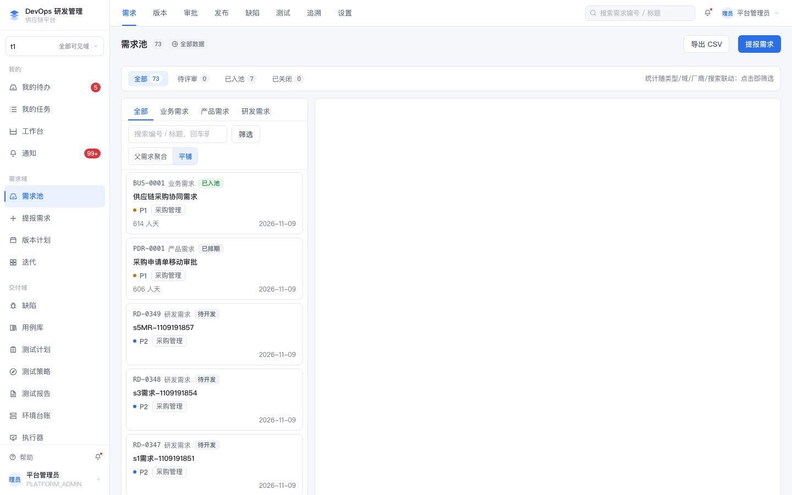 需求池：类型 Tab、父子聚合/平铺、CSV 导出 | 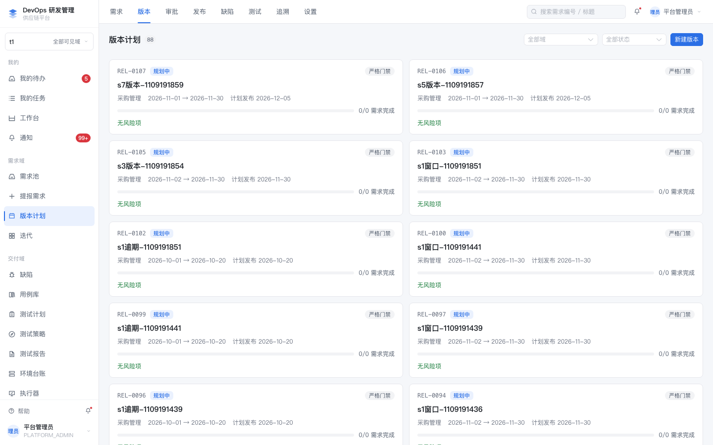 版本计划 + 里程碑 |
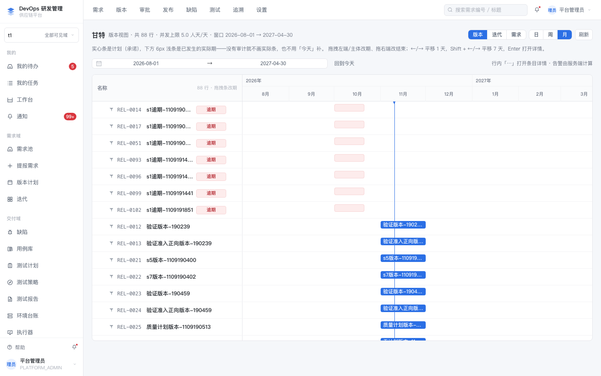 甘特：版本/迭代/需求三视图、拖拽改期、逾期标红 | 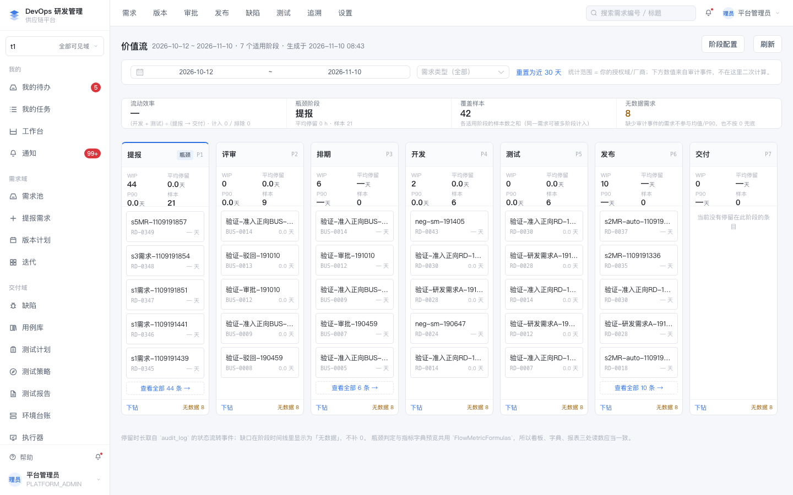 价值流：7 阶段 WIP、P90 停留、瓶颈阶段 |
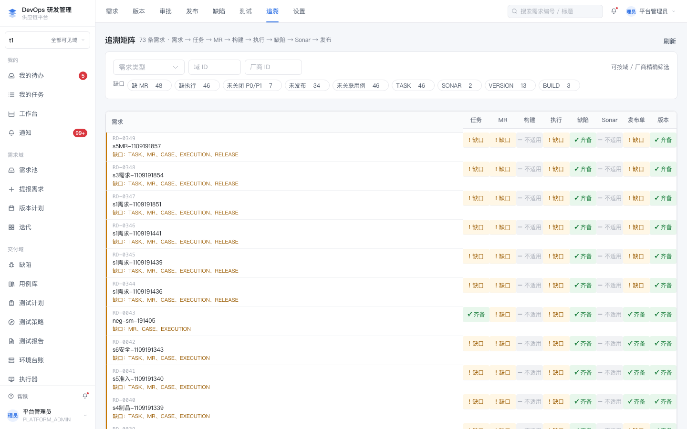 追溯矩阵：需求→任务→MR→测试→缺陷→发布 | 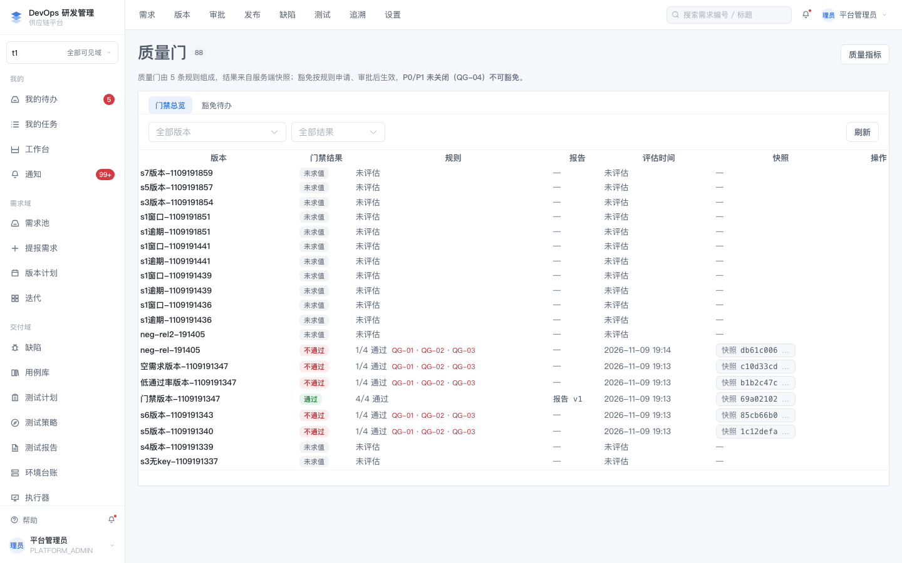 质量门总览 |
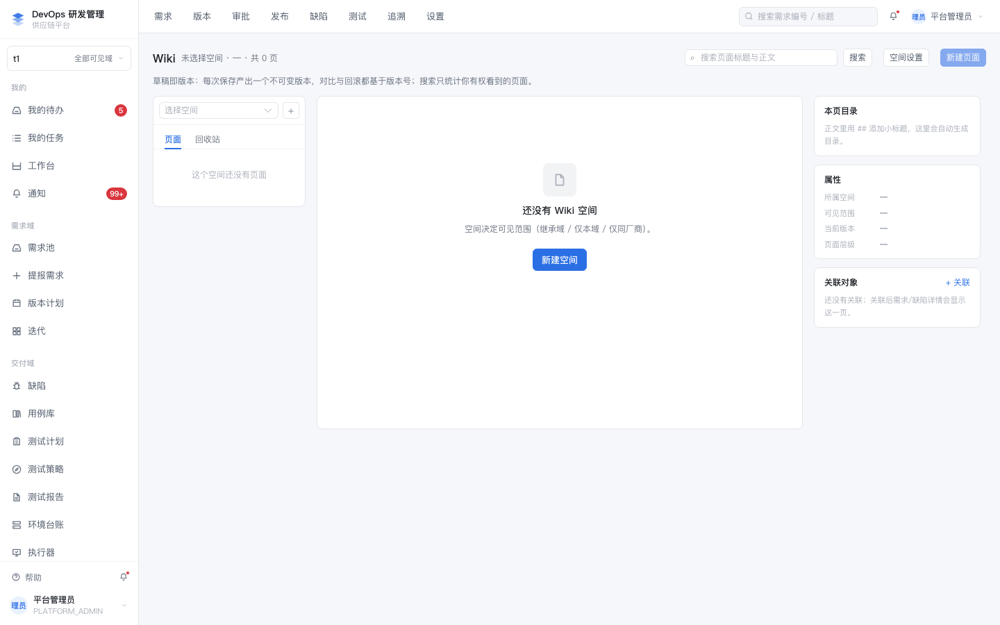 Wiki：空间/页面树/版本 | 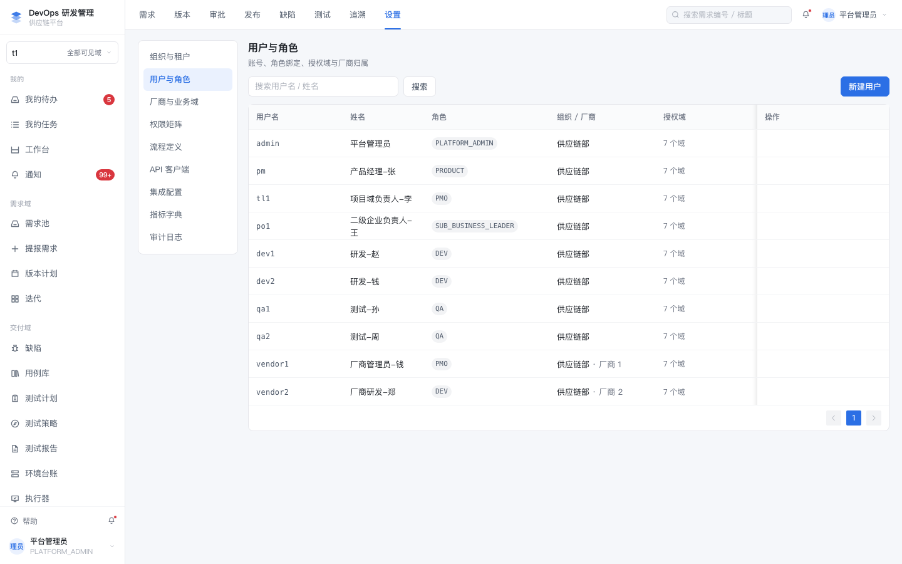 用户与角色（10 角色 × 56 功能码） |
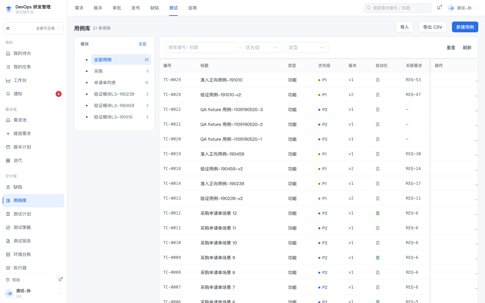 qa1：用例库（版本化、评审状态） | 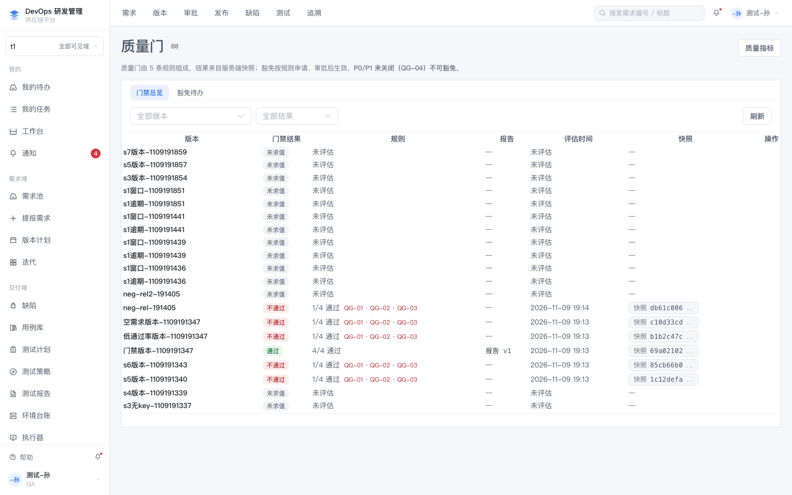 qa1：质量门（报告/规则/豁免） |
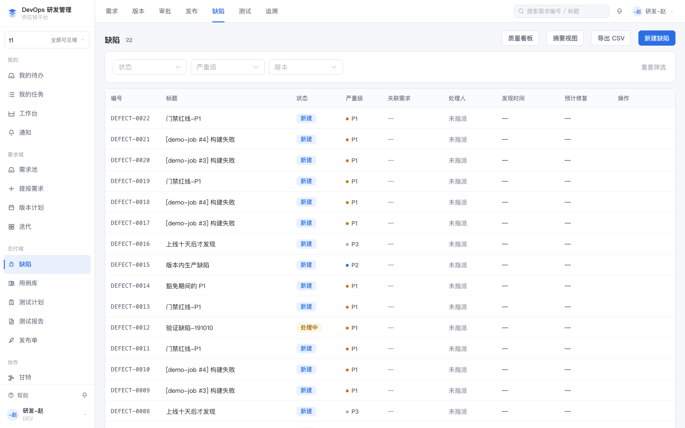 dev1：缺陷列表 | 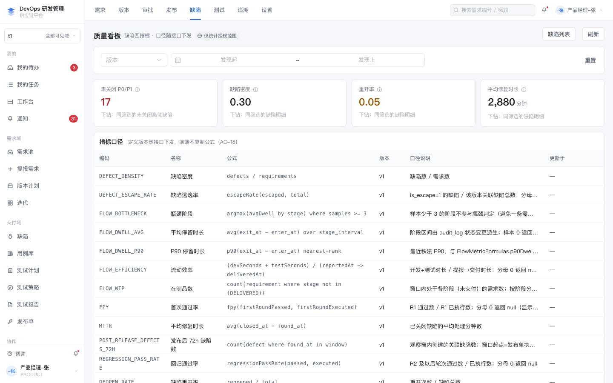 pm：缺陷看板 |
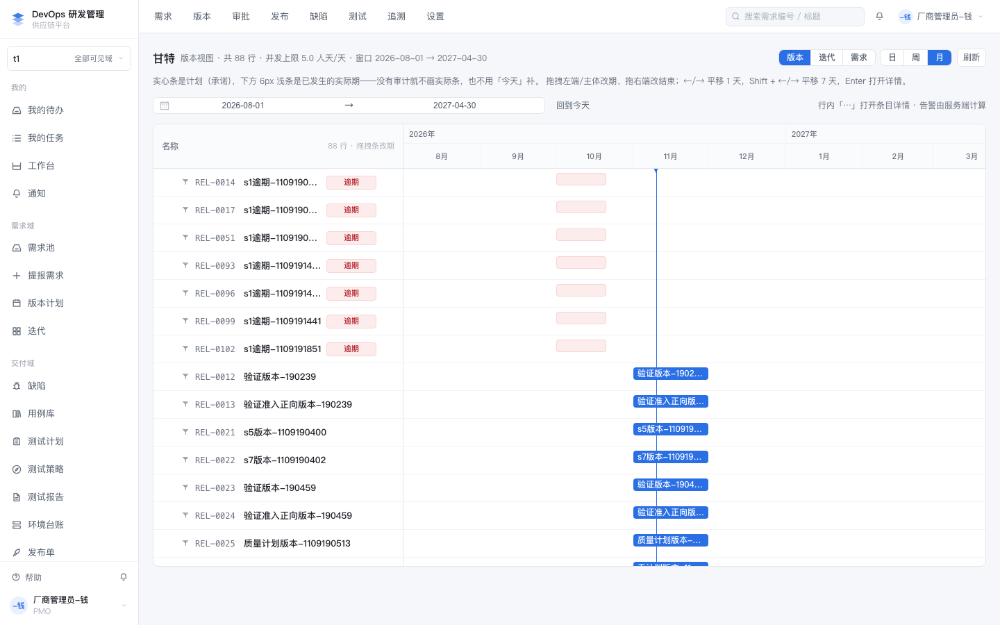 vendor1：甘特（只见本厂商承接） | 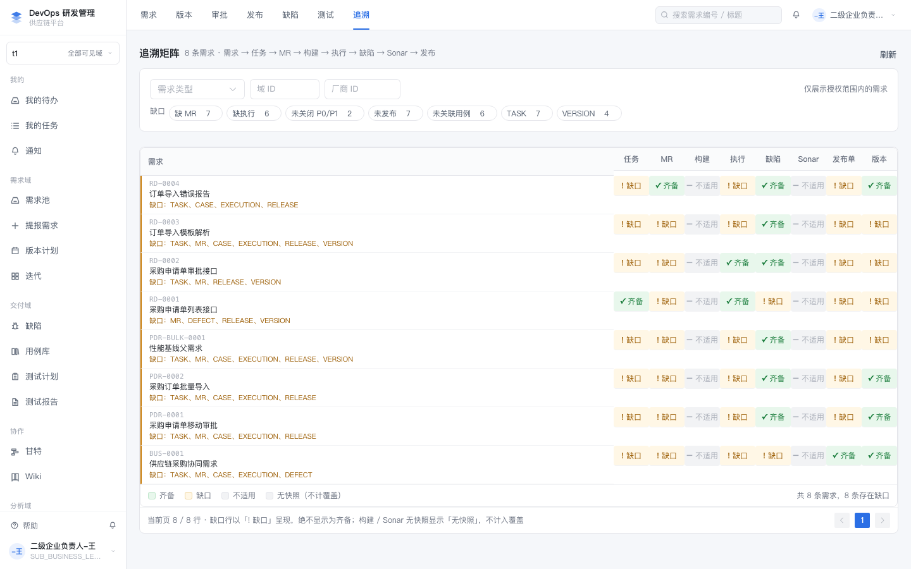 po1：追溯矩阵（二级企业视角） |
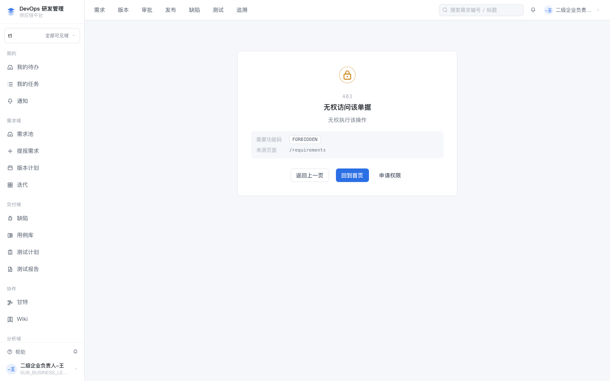
这张图是 r7 修复前的故障态，保留作对照：二级企业负责人 po1 打开 /requirements 直接落到全局 403 页（根因见 §6.1）。修复后 po1 打开需求池为 200 且看到 8 条，由 make access-verify 的 a2（状态码）与 a4（可见集）持续断言；页面级证据请按 §7.4 现截。
make platform-up
make platform-demo-reset # 干净演示数据（12 需求 / po1 见 8 / vendor1 见 3 / vendor2 见 0）
"/Applications/Google Chrome.app/Contents/MacOS/Google Chrome" --headless=new --no-sandbox \
--remote-debugging-port=9222 --user-data-dir=/tmp/chrome-cdp about:blank &
# CDP：Target.createTarget → attachToTarget(flatten) → Page.navigate(/login)
# → Runtime.evaluate 写 sessionStorage.setItem('devops.session', <登录响应>)
# → Page.navigate(目标路由) → Page.captureScreenshotDELIVERED-MODULES.md 改成“设计已定、未排期”（本轮按 PRD 非目标处理，未动）。/testcases 对 dev1 可见源自 DEV 对 case:manage 的 RESTRICTED（收窄而非拒绝）。若产品要求 dev1 不可见，需改权限矩阵，属独立需求。